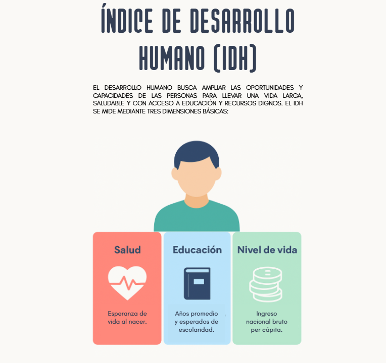
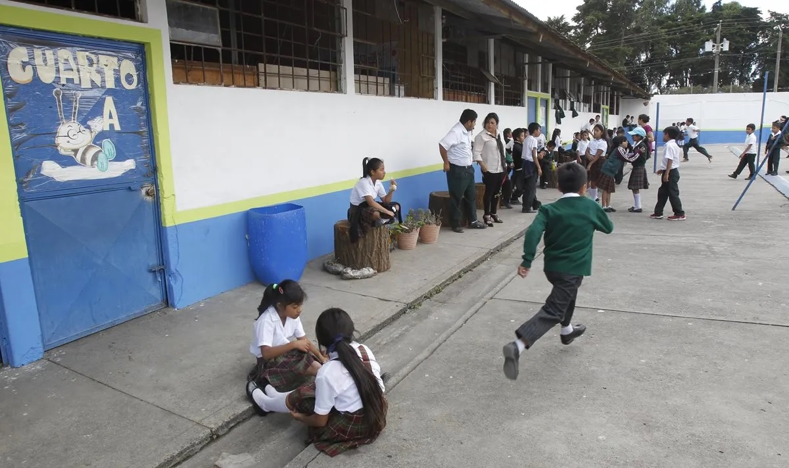

Desarrollo Humano: Realidad y Desafíos en Guatemala
Introducción al tema
El desarrollo humano se entiende como el proceso mediante el cual las personas amplían sus oportunidades, mejoran sus condiciones de vida y logran satisfacer sus necesidades básicas, tanto materiales como sociales y culturales. En Guatemala, este concepto se ha convertido en un desafío persistente debido a las desigualdades económicas, la exclusión social y la falta de acceso equitativo a la educación, la salud y el empleo digno. A lo largo de las últimas décadas, los indicadores del Índice de Desarrollo Humano (IDH) han mostrado avances modestos, pero aún se evidencian brechas profundas entre zonas urbanas y rurales, así como entre grupos étnicos. Comprender estas diferencias resulta fundamental para promover políticas más justas e inclusivas que impulsen el bienestar integral de todos los guatemaltecos.
Infografía: Componentes del Índice de Desarrollo Humano (IDH)
El IDH se basa en tres dimensiones fundamentales que reflejan el bienestar y las oportunidades de las personas:

¿Sabías que...?
Guatemala ocupa el puesto 135 de 193 países en el Índice de Desarrollo Humano (PNUD, 2023).
Más del 50% de la población vive en condiciones de pobreza, y un 15% en pobreza extrema.
El acceso a la educación media es uno de los más bajos de América Latina.
Las mujeres y comunidades indígenas presentan los niveles más bajos de acceso a oportunidades laborales formales.
Tabla comparativa del desarrollo humano en Guatemala y Centroamérica
País
IDH (2023)
Esperanza de vida
Años promedio de escolaridad
Guatemala
0.660
70.5
6.5
Costa Rica
0.809
80.3
8.8
El Salvador
0.680
73.2
7.5
Honduras
0.621
72.5
6.2
En comparación con otros países de Centroamérica, Guatemala presenta un Índice de Desarrollo Humano inferior al promedio regional. Su bajo nivel educativo y la desigualdad económica afectan directamente las oportunidades de progreso social, especialmente en comunidades rurales e indígenas.
Evolución del IDH en Guatemala (2010–2023)
Aunque el IDH de Guatemala ha mejorado gradualmente en los últimos años, su crecimiento sigue siendo lento en comparación con otros países de la región, reflejando desafíos en educación y equidad.
Una voz del territorio: Testimonio de José
José, un joven del departamento de Alta Verapaz, relata que para poder estudiar debe caminar más de una hora diaria hasta la escuela. Su comunidad no cuenta con acceso a internet estable ni con suficientes docentes. A pesar de estas limitaciones, José sueña con ser ingeniero y contribuir al desarrollo de su pueblo. Su historia refleja la realidad de miles de jóvenes guatemaltecos que luchan contra las barreras geográficas y tecnológicas para alcanzar una mejor calidad de vida.
Reflexión sobre el testimonio: El caso de José muestra cómo las desigualdades territoriales impactan directamente en las oportunidades de desarrollo. Su esfuerzo simboliza la importancia de la resiliencia y la necesidad de políticas que garanticen una educación inclusiva y accesible para todos los sectores del país.
Reflexión personal
En mi experiencia personal, he observado que las diferencias geográficas y sociales influyen significativamente en el acceso a la educación. Algunos compañeros que viven en comunidades rurales enfrentan obstáculos como la falta de transporte, conectividad o recursos tecnológicos, lo cual limita sus oportunidades de aprendizaje. Esta realidad evidencia cómo la brecha digital afecta especialmente a los grupos sociales más vulnerables, como las comunidades indígenas o de escasos recursos, impidiendo una participación equitativa en el entorno educativo.
Para mí, una educación de calidad significa mucho más que adquirir conocimientos: implica tener igualdad de condiciones, docentes capacitados, acceso a tecnología y un ambiente que fomente el pensamiento crítico y la empatía. La educación debe ser una herramienta para transformar vidas, reducir desigualdades y construir una sociedad más justa y solidaria.
Referencias
Programa de las Naciones Unidas para el Desarrollo (PNUD). (2023). Informe sobre desarrollo humano 2023/2024. https://hdr.undp.org
Instituto Nacional de Estadística de Guatemala (INE). (2023). Indicadores sociales y demográficos. https://www.ine.gob.gt
Banco Mundial. (2023). Datos sobre desarrollo humano: Guatemala. https://data.worldbank.org
Ministerio de Educación de Guatemala. (2022). Acceso y calidad educativa en zonas rurales. https://www.mineduc.gob.gt
Educación y oportunidades de generación de conocimiento
La educación es un habilitador clave del desarrollo humano porque expande capacidades, reduce brechas
y mejora la agencia de las personas. En Guatemala, los avances son reales pero desiguales: persisten
diferencias por área geográfica, condición étnica y nivel socioeconómico, con efectos directos sobre
el acceso, la permanencia y el aprendizaje. Los indicadores más recientes muestran una mejora gradual
del alfabetismo adulto y una alta alfabetización juvenil, pero también tasas de abandono relevantes en
el ciclo básico y diversificado, así como barreras de conectividad en los hogares más pobres. Estas
brechas se traducen en trayectorias educativas truncas, menor acumulación de capital humano y, por
ende, menos oportunidades de empleo digno e innovación social.
La dimensión digital se ha vuelto central. Aunque más de la mitad de la población usa Internet, el
acceso doméstico a servicios fijos y a dispositivos sigue siendo muy desigual entre hogares pobres y
no pobres, y entre áreas urbanas y rurales. En paralelo, el Ministerio de Educación (MINEDUC) ha
actualizado su Plan Estratégico Institucional 2024–2028 y reporta acciones de remozamiento de
escuelas, dotación de insumos (textos, alimentación), contratación docente y metas de recuperación de
aprendizajes. Estas iniciativas, alineadas con la Política General de Gobierno, buscan mejorar la
permanencia, la transición a media y los aprendizajes con pertinencia cultural y lingüística.
Este apartado reúne datos clave y evidencia comparada para entender dónde estamos y qué decisiones
podrían acelerar el cambio: tasas de alfabetización por sexo y pertenencia étnica, años promedio de
escolaridad, abandono escolar por nivel, y acceso a Internet y dispositivos. También se analizan los
niveles de estudio alcanzados y sus causas estructurales—pobreza, barreras lingüísticas, distancia a
centros educativos, infraestructura y conectividad—y se discuten sus consecuencias en empleabilidad,
ingresos y participación ciudadana. Finalmente, se incorpora una “voz del territorio” y una reflexión
personal para conectar los datos con la experiencia vivida y con la pregunta rectora: ¿cómo abrimos
más y mejores oportunidades de generar conocimiento desde todos los territorios?
¿Sabías que...?
El alfabetismo adulto en 2022 se estima en 83.0%; hombres ≈88.4% y mujeres ≈78.6%.
El uso de Internet alcanzó ~56% de la población (2023), con fuertes brechas por nivel de ingreso y territorio.
En 2023, el abandono fue de 1.62% en primaria, 11.84% en básico y 14.53% en diversificado.
En hogares en pobreza extrema, solo ~2% tiene Internet residencial; en hogares no pobres, ~30%.
*La ENCOVI/INE y compendios de pueblos reportan consistentemente brechas de alfabetismo desfavorables para población indígena frente a no indígena.
Fotografías y análisis del entorno escolar
Figura 1. Escuela en zona rura. (Foto Prensa Libre: Rolando Miranda).
Análisis: La infraestructura, el acceso a docentes bilingües y la conectividad suelen ser limitados en áreas rurales. Esto afecta la asistencia, la permanencia y el aprendizaje, y se relaciona con tasas más altas de sobre-edad y abandono en la transición a básicos.

Figura 2. Escuela en zona urbana. (Foto Prensa Libre: Paulo Raquec)
Análisis: En contextos urbanos hay mayor disponibilidad de servicios, maestros especializados y recursos didácticos, aunque persisten retos de hacinamiento y seguridad escolar. La brecha digital es menor que en lo rural, pero no nula.
Grado de estudio alcanzado: por qué ocurre y qué implica
La combinación de pobreza, distancia a centros educativos, barreras lingüísticas y baja conectividad
reduce la transición a secundaria y diversificado. La evidencia oficial y académica muestra que el
abandono se concentra en los pasos de primaria→básico y básico→diversificado; esto restringe la
acumulación de capital humano, disminuye productividad e ingresos futuros y limita la innovación local.
¿Qué está haciendo el MINEDUC (2024 en adelante)?
Actualización del Plan Estratégico Institucional 2024–2028/2029 con ejes de cobertura, calidad, equidad e infraestructura.
Remozamiento de escuelas, alimentación escolar, dotación de textos y contratación docente; meta de remozar miles de escuelas en el período 2024–2028.
Uso de estadísticas y tableros de eficiencia (abandono, repitencia, sobre-edad) para orientar decisiones.
Testimonio: “Aprender con señal intermitente”
“Me llamo Andrea, vivo en una aldea de Quiché. Para conectarme a clases durante la pandemia
subía a un cerro buscando señal. A veces tardaba más en encontrar Internet que en resolver las
tareas. Este año entré a básicos; sigo estudiando con el celular de mi mamá y compartimos un solo
cuaderno entre mis dos hermanos y yo. Quiero terminar diversificado para trabajar en salud
comunitaria.”
Reflexión: La historia de Andrea muestra que la brecha digital no es solo acceso a Internet: incluye dispositivos,
costos de datos, espacios de estudio y soporte familiar. Las políticas deben integrar conectividad significativa,
dispositivos, contenidos en lengua materna y apoyo socioemocional para sostener trayectorias educativas.
Reflexión personal
Obstáculos frente a alguien de otra localidad: comparado con compañeros de zonas con mejor
transporte y conectividad, yo he tenido que invertir más tiempo en traslados y resolver tareas con recursos
limitados. Eso me obligó a planificar mejor y a buscar apoyo entre pares.
Brecha digital y grupos étnicos: afecta más a comunidades indígenas por menor acceso a Internet
residencial, menos dispositivos por hogar y contenidos poco pertinentes lingüísticamente; eso impacta
aprendizaje y permanencia.
¿Qué significa para mí una educación de calidad? oportunidades reales de aprender con docentes
capacitados, infraestructura digna, conectividad y materiales cultural y lingüísticamente pertinentes,
que habiliten proyectos de vida y participación ciudadana.
World Bank. (2025). Individuals using the Internet (% of population) – Guatemala. https://data.worldbank.org/indicator/IT.NET.USER.ZS?locations=GT
MINEDUC & URL-OCE. (2025). La eficiencia del sistema educativo (indicadores 2023). https://principal.url.edu.gt/.../INFOGRAFIA%203.pdf
Agencia Guatemalteca de Noticias. (2024, ago 21). INE presenta resultados de la ENCOVI 2023. https://agn.gt/ine-presenta-resultados-de-la-encovi-2023-en-guatemala/
UNESCO Institute for Statistics. (2025). SDG 4 Country Profile: Guatemala. https://download.uis.unesco.org/SDG4/SDG4-Profile-Guatemala.pdf
MINEDUC. (2024). Proyecto de Actualización del Plan Estratégico Institucional 2024–2028/2029. https://infopublica.mineduc.gob.gt/.../PEI_2024-2028.pdf
Presidencia de Guatemala. (2025). Logros en educación y metas de remozamiento escolar. https://bernardoarevalo.presidencia.gob.gt/presidente-arevalo-expone-logros-en-educacion-prioridad-del-gobierno/
World Bank. (2020). Strengthening statistical capacities to tackle school dropout in Guatemala. https://www.worldbank.org/en/results/2020/10/16/strengthening-statistical-capacities-tackle-school-dropout-guatemala
INE Guatemala. (2024). Género y Pueblos / Compendios y ENCOVI 2023. https://www.ine.gob.gt/genero-y-pueblos/ :contentReference[oaicite:28]{index=28}
Gráficos sobre indicadores de salud en Guatemala
La salud es uno de los pilares fundamentales del desarrollo humano, ya que refleja las condiciones de vida, el acceso a servicios básicos y el grado de bienestar general de la población.
En Guatemala, los desafíos sanitarios son profundos y multifactoriales: se combinan altos niveles de desnutrición, brechas de acceso a servicios, desigualdades territoriales, y determinantes sociales como la pobreza, la exclusión y la falta de infraestructura hospitalaria.
El país ha logrado avances en la reducción de la mortalidad infantil y en la esperanza de vida, pero la cobertura de atención primaria aún presenta deficiencias importantes, especialmente en comunidades rurales e indígenas.
La desigualdad se manifiesta de múltiples formas: la esperanza de vida de las mujeres supera por varios años a la de los hombres,
la mortalidad materna en mujeres indígenas es más del doble que en las no indígenas, y el acceso a servicios esenciales de salud se mantiene limitado.
Además, la desnutrición crónica infantil, que afecta a casi la mitad de los niños menores de cinco años, continúa siendo el principal problema de salud pública del país.
Estas condiciones no solo representan un reto médico, sino también estructural, porque la salud está íntimamente ligada a la educación, el saneamiento, la alimentación y las oportunidades económicas.
En respuesta, el Ministerio de Salud Pública y Asistencia Social (MSPAS) ha comenzado a implementar estrategias que priorizan la atención primaria, la reorganización de servicios en redes integradas y la mejora de la infraestructura sanitaria.
Sin embargo, los indicadores aún reflejan una gran deuda con la equidad, la pertinencia cultural y la cobertura efectiva de los servicios.
Los gráficos a continuación presentan una panorámica de estos retos, permitiendo observar la magnitud de las brechas y la urgencia de acciones sostenibles y coordinadas para fortalecer la salud pública en Guatemala.
Esperanza de vida al nacer por género (2023)
La esperanza de vida femenina (74.9 años) es superior a la masculina (70.3 años), reflejando brechas biológicas y sociales.
La menor longevidad en hombres se asocia con factores de riesgo laboral, accidentes y menor acceso a controles médicos preventivos.
Tasa de mortalidad materna por grupo étnico
La tasa de mortalidad materna es aproximadamente el doble en mujeres indígenas (163 por 100,000 nacidos vivos) que en mujeres no indígenas (78 por 100,000).
Esta diferencia responde a la falta de servicios obstétricos, barreras culturales y lingüísticas, y carencias en infraestructura rural.
Acceso a servicios esenciales de salud (Índice UHC)
El Índice de Cobertura de Servicios de Salud (UHC) muestra que Guatemala alcanza un puntaje de 59 sobre 100,
evidenciando avances moderados en atención primaria y prevención, pero con rezagos en la cobertura rural y la calidad de los servicios.
Desnutrición crónica en menores de 5 años
La desnutrición crónica infantil afecta al 46.7% de los niños menores de cinco años,
y se eleva a más del 53% en zonas rurales y 58% entre población indígena.
Este problema limita el desarrollo cognitivo y perpetúa el ciclo de pobreza intergeneracional.
Problema de salud pública: Desnutrición crónica infantil
La desnutrición crónica infantil en Guatemala representa una emergencia social.
Es producto de múltiples factores: pobreza, inseguridad alimentaria, falta de acceso a agua potable y saneamiento,
educación materna insuficiente y limitaciones en los servicios de salud.
Los hogares rurales e indígenas son los más afectados, donde los programas de nutrición y control prenatal tienen menor cobertura.
Desde el punto de vista estatal, la inversión pública en salud sigue siendo baja (≈2.5% del PIB),
lo que repercute en insuficiencia de personal, insumos y equipamiento.
En el plano social, la desigualdad de ingresos y la marginación territorial profundizan la vulnerabilidad nutricional.
Reducir la desnutrición requiere intervenciones intersectoriales sostenidas, educación alimentaria, acceso a servicios, y políticas que garanticen seguridad alimentaria.
Estrategias recientes del MSPAS (2024 en adelante)
Fortalecimiento de las Redes Integradas de Servicios de Salud (RISS) con enfoque territorial y cultural.
Rehabilitación de centros de salud y aumento de personal médico en el primer nivel de atención.
Implementación de la Política de Atención Primaria Renovada y programas de salud materno-infantil.
Ampliación de programas de vacunación, vigilancia nutricional y telemedicina en comunidades rurales.
Actividad de reflexión
¿Consideras que la salud es una decisión individual? No completamente.
Las decisiones individuales influyen en los hábitos, pero los determinantes sociales —ingresos, educación, territorio y políticas públicas—
condicionan las oportunidades reales de cuidar la salud.
Por ello, debe entenderse como una responsabilidad compartida entre las personas y el Estado.
¿Acciones pendientes para mejorar el acceso?
Implementar transporte sanitario en zonas rurales,
ampliar la telemedicina,
fortalecer la atención en idiomas mayas,
y garantizar insumos en los puestos de salud.
Estas acciones, aún no extendidas a nivel nacional, podrían reducir inequidades y mejorar el bienestar general.
Referencias
World Bank. (2023). Life expectancy at birth, by sex – Guatemala. https://data.worldbank.org/
Stollak, I., et al. (2016). Casas Maternas in the Rural Highlands of Guatemala. Global Health: Science and Practice, 4(1), 114–131.
World Health Organization. (2024). UHC service coverage index. https://data.who.int/
UNICEF Guatemala. (2024). Desnutrición crónica infantil en Guatemala. https://www.unicef.org/guatemala/
SESAN. (2024). Informe sobre la situación de la Seguridad Alimentaria y Nutricional. https://portal.sesan.gob.gt/
MSPAS. (2024). Plan Estratégico Institucional 2024–2028. Ministerio de Salud Pública y Asistencia Social de Guatemala.